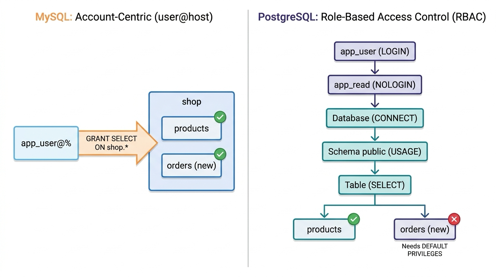
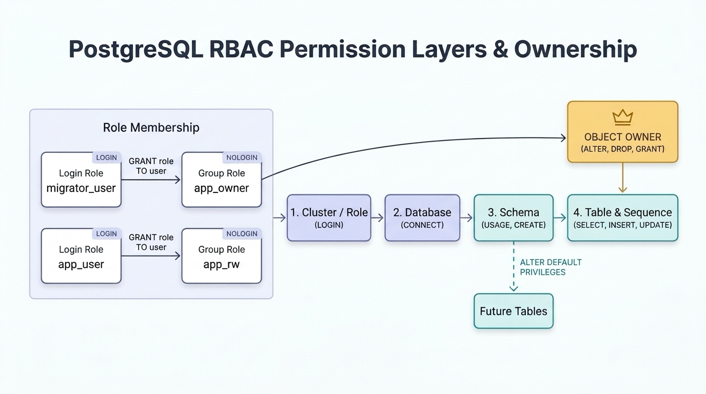
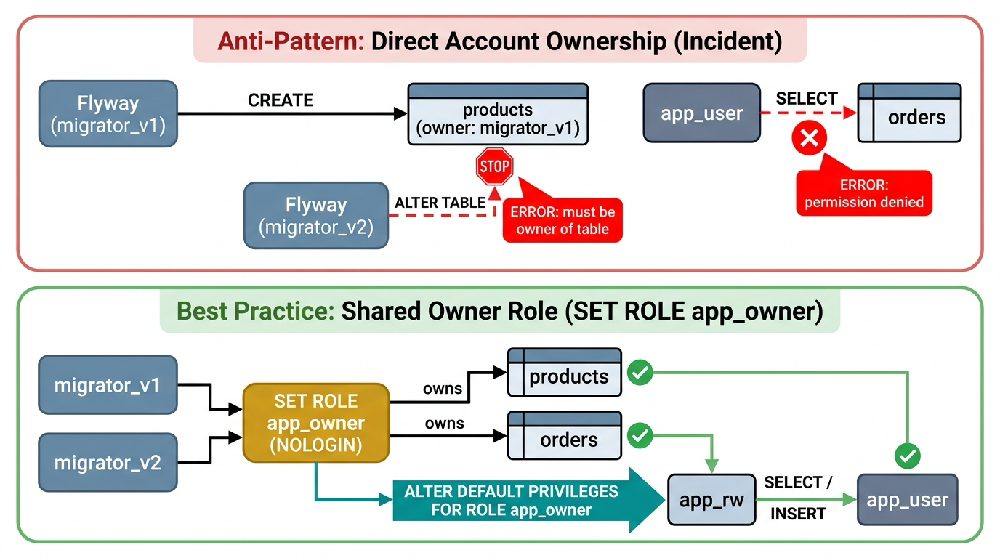
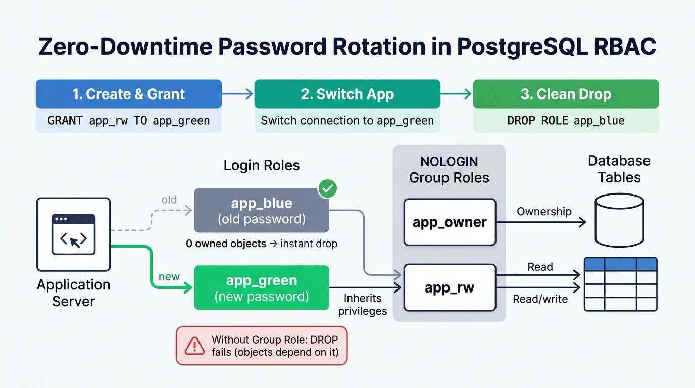

PostgreSQL 인증·인가는
왜 RBAC으로 이해해야 할까?
MySQL과 같은 감각으로 PostgreSQL을 운영하다가 마주치는
permission denied, must be owner of table,
role cannot be dropped 장애의 뿌리는 모두 하나입니다.
PostgreSQL의 Role 기반 접근 제어(RBAC)와 객체 소유권(Ownership) 원리를
그림과 인터랙티브 애니메이션으로 익힙니다.
Part 1. MySQL vs PostgreSQL
shop.* 와일드카드와 ALTER DEFAULT PRIVILEGES의 결정적 차이
Part 2. Flyway 소유권과 롤백
계정 교체 시 must be owner 장애, 트랜잭션 DDL 롤백, SET ROLE app_owner
Part 3. 비밀번호 로테이션
DROP ROLE 의존성 장애와 NOLOGIN 그룹 Role 기반 Blue/Green 교체
키보드 ← / → 방향키 또는 상단 버튼으로 이동합니다.
계정 중심(MySQL) vs 역할 기반(PostgreSQL RBAC)

| 구분 | MySQL 8.4 | PostgreSQL 16 |
|---|---|---|
| 주체 모델 | 'user'@'host' 계정 중심 |
모든 주체가 ROLE (LOGIN 속성으로 사용자·그룹 구분) |
| 신규 테이블 권한 | GRANT SELECT ON shop.*가 미래 테이블에도 자동 적용 |
ON ALL TABLES는 현재 시점만 적용 → ALTER DEFAULT PRIVILEGES 필수 |
DDL 권한 (ALTER) |
GRANT ALTER로 타 계정에 위임 가능 |
GRANT ALL이 있어도 오직 Owner(또는 멤버)만 실행 가능 |
신규 테이블이 생겼을 때 MySQL과 PostgreSQL은 어떻게 다를까?
아래 단계 버튼을 순서대로 눌러 같은 DDL을 실행했을 때 두 DB의 인가 결과가 어떻게 갈리는지 확인합니다.
MySQL 8.4 (GRANT SELECT ON shop.*)
PostgreSQL 16 (GRANT SELECT ON ALL TABLES)
products가 있는 상태에서 권한을 부여했습니다. 양쪽 모두 SELECT * FROM products;에 성공합니다.
PostgreSQL RBAC 4단계 관문과 Object Owner

일반 쿼리(DML)는 4개 관문을 모두 통과해야 합니다
- 1. Cluster / Role:
LOGIN속성으로 인증 통과 - 2. Database:
CONNECT ON DATABASE shop - 3. Schema:
USAGE ON SCHEMA public - 4. Table & Sequence:
SELECT/INSERT+SERIAL용 시퀀스USAGE
DDL은 오직 Object Owner만 가능합니다
- 테이블 생성 시점의
current_user가 자동으로 Owner가 됩니다. ALTER TABLE,DROP TABLE,GRANT는GRANT ALL로 위임되지 않습니다.- 따라서 소유권은 개인 계정이 아니라 공유
NOLOGINRole(app_owner)이 가져야 합니다.
Flyway 마이그레이션에서 터지는 두 가지 RBAC 장애

장애 1: 신규 테이블 배포 직후 앱 조회 실패
ERROR: permission denied for table ordersmigrator_v1이 V2로 orders를 만들었지만, ALTER DEFAULT PRIVILEGES가 없어 app_user가 즉시 차단됩니다.
장애 2: 마이그레이션 계정 교체 후 ALTER 실패
ERROR: must be owner of table productsmigrator_v2에게 GRANT ALL을 줘도 products 소유자가 migrator_v1이라 V3의 ALTER TABLE이 거부됩니다.
SET ROLE app_owner가 Flyway 소유권 문제를 해결하는 원리
모드를 전환하고 V1 → V2 → V3 실행 버튼을 눌러 소유자와 앱 권한이 어떻게 달라지는지 비교합니다.
마이그레이션 장애가 났을 때 롤백하는 두 가지 경로
경로 1: 실행 도중 실패 → 트랜잭션 DDL 자동 롤백
PostgreSQL은 CREATE TABLE, ALTER TABLE 같은 DDL도 트랜잭션 안에서 실행합니다.
-- V3__add_stock_to_products.sql
CREATE TABLE inventory_logs (...); -- 1) 성공
ALTER TABLE products ADD COLUMN stock; -- 2) 실패!
-- → PostgreSQL이 1) inventory_logs까지 원자적으로 롤백- MySQL과 달리 테이블이 절반만 적용된 깨진 상태가 남지 않습니다.
- 예외:
CREATE INDEX CONCURRENTLY처럼 트랜잭션 밖에서 실행되는 DDL이 실패해success = f행이 남았다면 원인 수정 후flyway repair로 실패 이력을 정리합니다.
경로 2: 이미 커밋된 V2 되돌리기 → 보상 마이그레이션
Flyway OSS(Community Edition)에는 유료 undo 명령이 없고, 실무에서도 이력 삭제보다 새 버전으로 되돌리는 전진 롤백(Forward-Fix)을 권장합니다.
-- flyway/rollback/V4__rollback_orders.sql
DROP TABLE IF EXISTS orders;flyway_schema_history에V1 → V2 → V4(rollback orders)가 감사 이력으로 투명하게 남습니다.- 주의:
DROP TABLE orders역시 소유자(app_owner) 권한으로 실행해야 합니다.
비밀번호 로테이션 후 옛 계정이 삭제되지 않는 이유

직접 소유 계정의 DROP ROLE 실패
ERROR: role "migrator_v1" cannot be dropped
because some objects depend on it
DETAIL: privileges for schema public
privileges for database shop
owner of sequence products_id_seq
owner of table products복구 순서 주의 (치명적 함정!)
-- 1) 반드시 소유권 먼저 이전!
REASSIGN OWNED BY migrator_v1 TO app_owner;
-- 2) 그 다음 잔여 권한만 회수
DROP OWNED BY migrator_v1;
-- 3) 이제 안전하게 계정 삭제
DROP ROLE migrator_v1;※ REASSIGN OWNED 없이 DROP OWNED를 먼저 치면 테이블과 데이터가 영구 삭제됩니다.
Blue/Green 로그인 계정 무중단 비밀번호 로테이션 시뮬레이터
권한과 소유권을 NOLOGIN 그룹 Role에 분리해 두었을 때, 4단계 무중단 교체가 어떻게 진행되는지 단계별로 눌러 확인합니다.
app_blue가 app_rw 권한을 상속받아 서비스를 처리 중입니다. app_blue 자체에는 직접 GRANT나 소유 테이블이 하나도 없습니다.
PostgreSQL RBAC 실무 체크리스트 & 자가 점검 퀴즈
GRANT SELECT ON ALL TABLES IN SCHEMA public TO app_read;를 실행한 뒤 새 테이블 orders를 만들었습니다. app_user가 조회하면?
migrator_v2에게 GRANT ALL ON ALL TABLES를 부여했습니다. migrator_v1이 만든 products에 ALTER TABLE을 실행하면?
migrator_v1을 안전하게 삭제할 때 올바른 순서는?
실무 설계 5원칙 체크리스트
- 권한과 소유권은
NOLOGIN그룹 Role(app_owner,app_rw,app_ro)에만 부여합니다. - 로그인 계정(
LOGIN)은 비밀번호와 그룹 멤버십(GRANT role TO user)만 가집니다. - Flyway 등 마이그레이션 도구는 반드시
-initSql="SET ROLE app_owner;"로 소유자를 통일합니다. ALTER DEFAULT PRIVILEGES FOR ROLE app_owner로 테이블과 시퀀스 기본 권한을 함께 설정합니다.- 비밀번호 로테이션은 Blue/Green 로그인 계정을 교체하고 구 계정을
ALTER ROLE ... NOLOGIN후DROP ROLE합니다.